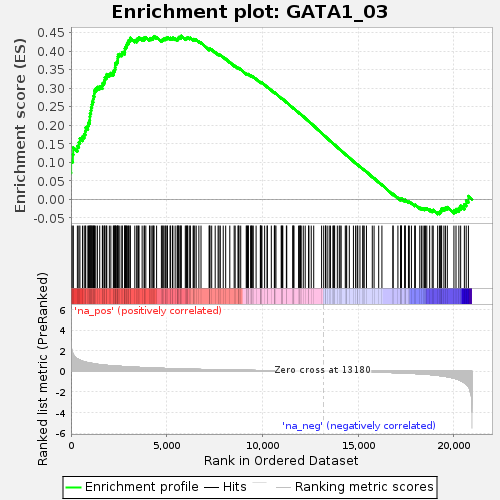
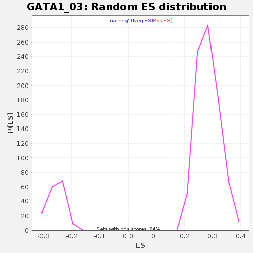

| | | Dataset | GSE18198_cov_collapsed |
| Phenotype | NoPhenotypeAvailable |
| Upregulated in class | na_pos |
| GeneSet | GATA1_03 |
| Enrichment Score (ES) | 0.44142634 |
| Normalized Enrichment Score (NES) | 1.5566835 |
| Nominal p-value | 0.0 |
| FDR q-value | 0.08968944 |
| FWER p-Value | 0.79 |
Table: GSEA Results Summary

Fig 1: Enrichment plot: GATA1_03
Profile of the Running ES Score & Positions of GeneSet Members on the Rank Ordered List
| SYMBOL | TITLE | RANK IN GENE LIST | RANK METRIC SCORE | RUNNING ES | CORE ENRICHMENT | | 1 | JUN | NA | 0 | 5.975 | 0.0715 | Yes |
| 2 | TOB1 | NA | 5 | 2.800 | 0.1049 | Yes |
| 3 | MYO1C | NA | 97 | 1.727 | 0.1212 | Yes |
| 4 | RALGPS2 | NA | 116 | 1.643 | 0.1400 | Yes |
| 5 | FLRT3 | NA | 333 | 1.209 | 0.1440 | Yes |
| 6 | DENND1B | NA | 409 | 1.132 | 0.1539 | Yes |
| 7 | HOXC11 | NA | 466 | 1.082 | 0.1642 | Yes |
| 8 | ITGB3BP | NA | 599 | 0.986 | 0.1696 | Yes |
| 9 | HIVEP3 | NA | 688 | 0.924 | 0.1764 | Yes |
| 10 | SLC25A14 | NA | 744 | 0.901 | 0.1846 | Yes |
| 11 | KLF15 | NA | 769 | 0.890 | 0.1941 | Yes |
| 12 | ELAVL4 | NA | 882 | 0.842 | 0.1987 | Yes |
| 13 | KDM6A | NA | 913 | 0.830 | 0.2072 | Yes |
| 14 | ERG | NA | 976 | 0.810 | 0.2139 | Yes |
| 15 | FZD4 | NA | 986 | 0.805 | 0.2231 | Yes |
| 16 | CD40 | NA | 996 | 0.803 | 0.2323 | Yes |
| 17 | GATA4 | NA | 1039 | 0.789 | 0.2397 | Yes |
| 18 | MBNL1 | NA | 1054 | 0.784 | 0.2485 | Yes |
| 19 | POLD4 | NA | 1093 | 0.769 | 0.2558 | Yes |
| 20 | ECHDC2 | NA | 1111 | 0.763 | 0.2641 | Yes |
| 21 | UROD | NA | 1158 | 0.746 | 0.2708 | Yes |
| 22 | DSPP | NA | 1174 | 0.741 | 0.2790 | Yes |
| 23 | CAPN1 | NA | 1218 | 0.728 | 0.2856 | Yes |
| 24 | SYTL2 | NA | 1223 | 0.727 | 0.2942 | Yes |
| 25 | SERTAD4 | NA | 1293 | 0.706 | 0.2993 | Yes |
| 26 | ERBB3 | NA | 1378 | 0.682 | 0.3034 | Yes |
| 27 | OGA | NA | 1500 | 0.653 | 0.3054 | Yes |
| 28 | MID1 | NA | 1638 | 0.624 | 0.3062 | Yes |
| 29 | NPL | NA | 1647 | 0.621 | 0.3133 | Yes |
| 30 | ETV1 | NA | 1721 | 0.606 | 0.3170 | Yes |
| 31 | ANGPT2 | NA | 1759 | 0.597 | 0.3224 | Yes |
| 32 | UCN2 | NA | 1771 | 0.594 | 0.3290 | Yes |
| 33 | HABP2 | NA | 1848 | 0.580 | 0.3322 | Yes |
| 34 | LYL1 | NA | 1870 | 0.576 | 0.3381 | Yes |
| 35 | GNB5 | NA | 2003 | 0.555 | 0.3384 | Yes |
| 36 | CCM2 | NA | 2082 | 0.545 | 0.3411 | Yes |
| 37 | SREK1 | NA | 2211 | 0.531 | 0.3413 | Yes |
| 38 | FOXP1 | NA | 2232 | 0.527 | 0.3467 | Yes |
| 39 | ADAMTS6 | NA | 2280 | 0.521 | 0.3506 | Yes |
| 40 | CREB5 | NA | 2305 | 0.517 | 0.3557 | Yes |
| 41 | SOX15 | NA | 2313 | 0.516 | 0.3615 | Yes |
| 42 | PNLIPRP1 | NA | 2316 | 0.516 | 0.3676 | Yes |
| 43 | RIMS1 | NA | 2385 | 0.507 | 0.3704 | Yes |
| 44 | ADORA3 | NA | 2437 | 0.501 | 0.3739 | Yes |
| 45 | ACVR2A | NA | 2444 | 0.499 | 0.3796 | Yes |
| 46 | PCDH9 | NA | 2449 | 0.499 | 0.3854 | Yes |
| 47 | SRSF1 | NA | 2462 | 0.496 | 0.3907 | Yes |
| 48 | ADAMTS3 | NA | 2550 | 0.484 | 0.3923 | Yes |
| 49 | FMO4 | NA | 2659 | 0.471 | 0.3928 | Yes |
| 50 | GRIN2B | NA | 2679 | 0.468 | 0.3974 | Yes |
| 51 | SOX5 | NA | 2804 | 0.454 | 0.3969 | Yes |
| 52 | LTBP1 | NA | 2814 | 0.453 | 0.4019 | Yes |
| 53 | PHOX2B | NA | 2817 | 0.453 | 0.4072 | Yes |
| 54 | TNXB | NA | 2846 | 0.450 | 0.4113 | Yes |
| 55 | ZIC1 | NA | 2893 | 0.445 | 0.4144 | Yes |
| 56 | MECOM | NA | 2915 | 0.444 | 0.4187 | Yes |
| 57 | POU2F3 | NA | 2941 | 0.442 | 0.4228 | Yes |
| 58 | MMP16 | NA | 3014 | 0.437 | 0.4245 | Yes |
| 59 | GREB1 | NA | 3015 | 0.437 | 0.4297 | Yes |
| 60 | CCDC80 | NA | 3089 | 0.427 | 0.4313 | Yes |
| 61 | RNF144B | NA | 3096 | 0.426 | 0.4361 | Yes |
| 62 | POU4F2 | NA | 3334 | 0.402 | 0.4295 | Yes |
| 63 | BTRC | NA | 3439 | 0.390 | 0.4292 | Yes |
| 64 | SP6 | NA | 3450 | 0.389 | 0.4333 | Yes |
| 65 | TMEM161B | NA | 3522 | 0.382 | 0.4345 | Yes |
| 66 | SFRP5 | NA | 3554 | 0.379 | 0.4375 | Yes |
| 67 | HIC1 | NA | 3716 | 0.367 | 0.4341 | Yes |
| 68 | TBX5 | NA | 3821 | 0.361 | 0.4334 | Yes |
| 69 | EPO | NA | 3833 | 0.360 | 0.4372 | Yes |
| 70 | SNCA | NA | 3909 | 0.352 | 0.4378 | Yes |
| 71 | CALM2 | NA | 4100 | 0.334 | 0.4326 | Yes |
| 72 | GABBR1 | NA | 4129 | 0.333 | 0.4352 | Yes |
| 73 | GNB3 | NA | 4224 | 0.325 | 0.4346 | Yes |
| 74 | DNAH11 | NA | 4282 | 0.321 | 0.4357 | Yes |
| 75 | PRDM8 | NA | 4302 | 0.318 | 0.4386 | Yes |
| 76 | PGGT1B | NA | 4340 | 0.316 | 0.4406 | Yes |
| 77 | MEIS2 | NA | 4472 | 0.307 | 0.4379 | Yes |
| 78 | PPCS | NA | 4722 | 0.290 | 0.4294 | Yes |
| 79 | ELF5 | NA | 4764 | 0.287 | 0.4308 | Yes |
| 80 | WDTC1 | NA | 4804 | 0.285 | 0.4323 | Yes |
| 81 | FBXL18 | NA | 4851 | 0.281 | 0.4335 | Yes |
| 82 | NRP2 | NA | 4917 | 0.275 | 0.4336 | Yes |
| 83 | SSX2IP | NA | 4950 | 0.272 | 0.4354 | Yes |
| 84 | GREM1 | NA | 5012 | 0.270 | 0.4356 | Yes |
| 85 | GLI1 | NA | 5040 | 0.269 | 0.4376 | Yes |
| 86 | HOXA7 | NA | 5174 | 0.260 | 0.4343 | Yes |
| 87 | STXBP2 | NA | 5204 | 0.258 | 0.4359 | Yes |
| 88 | ZNF385B | NA | 5301 | 0.254 | 0.4343 | Yes |
| 89 | UBE2F | NA | 5322 | 0.253 | 0.4364 | Yes |
| 90 | WWP2 | NA | 5441 | 0.247 | 0.4337 | Yes |
| 91 | EGFLAM | NA | 5546 | 0.240 | 0.4315 | Yes |
| 92 | DCAF7 | NA | 5582 | 0.239 | 0.4327 | Yes |
| 93 | ARL4C | NA | 5586 | 0.238 | 0.4354 | Yes |
| 94 | PAPPA | NA | 5632 | 0.236 | 0.4360 | Yes |
| 95 | CHMP2B | NA | 5642 | 0.235 | 0.4384 | Yes |
| 96 | SLC4A1 | NA | 5736 | 0.230 | 0.4367 | Yes |
| 97 | LRGUK | NA | 5741 | 0.230 | 0.4393 | Yes |
| 98 | NR3C2 | NA | 5754 | 0.230 | 0.4414 | Yes |
| 99 | XIRP1 | NA | 5971 | 0.218 | 0.4336 | No |
| 100 | MEF2C | NA | 6010 | 0.216 | 0.4344 | No |
| 101 | HOXB6 | NA | 6038 | 0.215 | 0.4356 | No |
| 102 | FAM120C | NA | 6082 | 0.213 | 0.4361 | No |
| 103 | ATXN7L2 | NA | 6103 | 0.211 | 0.4377 | No |
| 104 | MMP23B | NA | 6203 | 0.207 | 0.4354 | No |
| 105 | RHAG | NA | 6238 | 0.205 | 0.4362 | No |
| 106 | ZDHHC2 | NA | 6380 | 0.198 | 0.4317 | No |
| 107 | SCUBE3 | NA | 6410 | 0.197 | 0.4327 | No |
| 108 | RASAL2 | NA | 6465 | 0.194 | 0.4324 | No |
| 109 | CCL27 | NA | 6541 | 0.190 | 0.4310 | No |
| 110 | BNC2 | NA | 6680 | 0.184 | 0.4266 | No |
| 111 | TMEM87A | NA | 6792 | 0.180 | 0.4234 | No |
| 112 | BPGM | NA | 7214 | 0.164 | 0.4050 | No |
| 113 | SPAG7 | NA | 7244 | 0.163 | 0.4056 | No |
| 114 | AQP4 | NA | 7259 | 0.162 | 0.4068 | No |
| 115 | EGR2 | NA | 7350 | 0.159 | 0.4044 | No |
| 116 | TTBK2 | NA | 7533 | 0.152 | 0.3974 | No |
| 117 | FAM117A | NA | 7685 | 0.147 | 0.3919 | No |
| 118 | ATP13A4 | NA | 7732 | 0.144 | 0.3914 | No |
| 119 | ZMAT4 | NA | 7800 | 0.142 | 0.3898 | No |
| 120 | NDRG2 | NA | 7953 | 0.136 | 0.3841 | No |
| 121 | P2RY10 | NA | 8081 | 0.132 | 0.3795 | No |
| 122 | DMD | NA | 8296 | 0.124 | 0.3707 | No |
| 123 | GNB1L | NA | 8524 | 0.116 | 0.3611 | No |
| 124 | EHF | NA | 8576 | 0.115 | 0.3600 | No |
| 125 | LBX1 | NA | 8730 | 0.110 | 0.3540 | No |
| 126 | KLHDC3 | NA | 8741 | 0.110 | 0.3548 | No |
| 127 | MAML3 | NA | 8778 | 0.109 | 0.3543 | No |
| 128 | ZEB2 | NA | 8867 | 0.105 | 0.3514 | No |
| 129 | PITX2 | NA | 9154 | 0.097 | 0.3387 | No |
| 130 | PRG2 | NA | 9178 | 0.097 | 0.3388 | No |
| 131 | TFR2 | NA | 9222 | 0.096 | 0.3378 | No |
| 132 | SERPINB6 | NA | 9259 | 0.095 | 0.3372 | No |
| 133 | TMEM151A | NA | 9262 | 0.094 | 0.3383 | No |
| 134 | CTCF | NA | 9384 | 0.091 | 0.3335 | No |
| 135 | ZMYND12 | NA | 9416 | 0.090 | 0.3331 | No |
| 136 | ZEB1 | NA | 9426 | 0.090 | 0.3337 | No |
| 137 | KCNN2 | NA | 9492 | 0.088 | 0.3316 | No |
| 138 | UBE3A | NA | 9518 | 0.087 | 0.3315 | No |
| 139 | KRT72 | NA | 9670 | 0.082 | 0.3252 | No |
| 140 | FOXA1 | NA | 9891 | 0.076 | 0.3155 | No |
| 141 | PRKCI | NA | 9900 | 0.076 | 0.3160 | No |
| 142 | NF2 | NA | 9903 | 0.076 | 0.3168 | No |
| 143 | PNLIPRP2 | NA | 9945 | 0.075 | 0.3157 | No |
| 144 | APTX | NA | 9976 | 0.074 | 0.3151 | No |
| 145 | CRLS1 | NA | 10116 | 0.069 | 0.3092 | No |
| 146 | LHX6 | NA | 10245 | 0.066 | 0.3039 | No |
| 147 | PCK1 | NA | 10258 | 0.066 | 0.3041 | No |
| 148 | EN1 | NA | 10465 | 0.060 | 0.2948 | No |
| 149 | LRIG3 | NA | 10623 | 0.056 | 0.2879 | No |
| 150 | DLG4 | NA | 10641 | 0.055 | 0.2878 | No |
| 151 | PTMS | NA | 10649 | 0.055 | 0.2881 | No |
| 152 | SNX17 | NA | 10707 | 0.054 | 0.2860 | No |
| 153 | KIRREL2 | NA | 10984 | 0.046 | 0.2732 | No |
| 154 | ARHGAP15 | NA | 10993 | 0.046 | 0.2733 | No |
| 155 | POFUT1 | NA | 11053 | 0.044 | 0.2710 | No |
| 156 | LMO3 | NA | 11063 | 0.044 | 0.2711 | No |
| 157 | GATA6 | NA | 11252 | 0.040 | 0.2625 | No |
| 158 | IL1RAPL1 | NA | 11271 | 0.039 | 0.2621 | No |
| 159 | OTX2 | NA | 11596 | 0.032 | 0.2468 | No |
| 160 | GABRG2 | NA | 11597 | 0.032 | 0.2472 | No |
| 161 | PCDH7 | NA | 11607 | 0.031 | 0.2472 | No |
| 162 | FOXP3 | NA | 11649 | 0.030 | 0.2456 | No |
| 163 | CA1 | NA | 11889 | 0.026 | 0.2343 | No |
| 164 | DSG4 | NA | 11952 | 0.024 | 0.2316 | No |
| 165 | GATA1 | NA | 11954 | 0.024 | 0.2319 | No |
| 166 | TSSK1B | NA | 11989 | 0.023 | 0.2305 | No |
| 167 | ARHGAP26 | NA | 12027 | 0.023 | 0.2290 | No |
| 168 | TFAP2D | NA | 12134 | 0.022 | 0.2241 | No |
| 169 | NECTIN4 | NA | 12236 | 0.019 | 0.2195 | No |
| 170 | KLF14 | NA | 12412 | 0.016 | 0.2112 | No |
| 171 | EFNB1 | NA | 12427 | 0.015 | 0.2107 | No |
| 172 | NCDN | NA | 12551 | 0.013 | 0.2049 | No |
| 173 | BSN | NA | 12680 | 0.010 | 0.1989 | No |
| 174 | IGF2 | NA | 13092 | 0.001 | 0.1790 | No |
| 175 | MYRF | NA | 13202 | -0.000 | 0.1738 | No |
| 176 | HNRNPK | NA | 13296 | -0.002 | 0.1693 | No |
| 177 | GRM1 | NA | 13302 | -0.002 | 0.1691 | No |
| 178 | LIX1 | NA | 13382 | -0.004 | 0.1653 | No |
| 179 | NKX6-2 | NA | 13489 | -0.006 | 0.1603 | No |
| 180 | FBXO11 | NA | 13555 | -0.008 | 0.1572 | No |
| 181 | ITSN2 | NA | 13683 | -0.010 | 0.1512 | No |
| 182 | TBX19 | NA | 13725 | -0.011 | 0.1494 | No |
| 183 | RBPJ | NA | 13740 | -0.011 | 0.1488 | No |
| 184 | RAB11A | NA | 13773 | -0.012 | 0.1474 | No |
| 185 | MEA1 | NA | 13914 | -0.015 | 0.1408 | No |
| 186 | SLC26A9 | NA | 14014 | -0.017 | 0.1363 | No |
| 187 | CNN1 | NA | 14057 | -0.018 | 0.1345 | No |
| 188 | ADAMTSL1 | NA | 14114 | -0.019 | 0.1320 | No |
| 189 | CASZ1 | NA | 14329 | -0.023 | 0.1219 | No |
| 190 | STAG2 | NA | 14374 | -0.024 | 0.1201 | No |
| 191 | YBX1 | NA | 14403 | -0.025 | 0.1190 | No |
| 192 | NFE2 | NA | 14540 | -0.028 | 0.1128 | No |
| 193 | IGF2-AS | NA | 14755 | -0.033 | 0.1029 | No |
| 194 | S100A10 | NA | 14868 | -0.036 | 0.0979 | No |
| 195 | FEV | NA | 14950 | -0.039 | 0.0944 | No |
| 196 | SETD2 | NA | 14982 | -0.041 | 0.0934 | No |
| 197 | S1PR2 | NA | 15096 | -0.044 | 0.0885 | No |
| 198 | NRAS | NA | 15241 | -0.049 | 0.0821 | No |
| 199 | HAMP | NA | 15262 | -0.050 | 0.0818 | No |
| 200 | KRIT1 | NA | 15318 | -0.052 | 0.0797 | No |
| 201 | TMEM255A | NA | 15435 | -0.056 | 0.0748 | No |
| 202 | GPRIN3 | NA | 15740 | -0.069 | 0.0609 | No |
| 203 | CACNA2D3 | NA | 15834 | -0.074 | 0.0573 | No |
| 204 | KCND1 | NA | 16075 | -0.084 | 0.0467 | No |
| 205 | ADD3 | NA | 16243 | -0.093 | 0.0398 | No |
| 206 | PCOLCE | NA | 16818 | -0.121 | 0.0135 | No |
| 207 | CISH | NA | 16827 | -0.121 | 0.0146 | No |
| 208 | FAM71C | NA | 17079 | -0.137 | 0.0041 | No |
| 209 | PLAGL2 | NA | 17224 | -0.149 | -0.0011 | No |
| 210 | SIX1 | NA | 17232 | -0.150 | 0.0004 | No |
| 211 | RASSF5 | NA | 17242 | -0.150 | 0.0017 | No |
| 212 | EGLN1 | NA | 17263 | -0.152 | 0.0026 | No |
| 213 | TWIST1 | NA | 17433 | -0.165 | -0.0036 | No |
| 214 | EVA1C | NA | 17455 | -0.166 | -0.0026 | No |
| 215 | RMI1 | NA | 17458 | -0.166 | -0.0007 | No |
| 216 | RASGRP3 | NA | 17630 | -0.180 | -0.0068 | No |
| 217 | HES1 | NA | 17674 | -0.183 | -0.0067 | No |
| 218 | SMARCA5 | NA | 17785 | -0.195 | -0.0097 | No |
| 219 | BMP10 | NA | 17955 | -0.210 | -0.0154 | No |
| 220 | AP2M1 | NA | 17990 | -0.214 | -0.0144 | No |
| 221 | PIM1 | NA | 18221 | -0.239 | -0.0227 | No |
| 222 | PPP1R16A | NA | 18305 | -0.248 | -0.0237 | No |
| 223 | WNT8B | NA | 18393 | -0.258 | -0.0248 | No |
| 224 | ZNF263 | NA | 18471 | -0.269 | -0.0253 | No |
| 225 | FURIN | NA | 18524 | -0.275 | -0.0246 | No |
| 226 | DOK2 | NA | 18588 | -0.287 | -0.0242 | No |
| 227 | PTCHD4 | NA | 18737 | -0.309 | -0.0276 | No |
| 228 | JPH1 | NA | 18870 | -0.331 | -0.0300 | No |
| 229 | GBX2 | NA | 18923 | -0.340 | -0.0285 | No |
| 230 | MYBPC3 | NA | 19155 | -0.388 | -0.0350 | No |
| 231 | KRT2 | NA | 19247 | -0.408 | -0.0345 | No |
| 232 | PRRC1 | NA | 19295 | -0.419 | -0.0317 | No |
| 233 | ZMYM4 | NA | 19339 | -0.432 | -0.0286 | No |
| 234 | YPEL4 | NA | 19364 | -0.438 | -0.0246 | No |
| 235 | ZFPM2 | NA | 19482 | -0.470 | -0.0246 | No |
| 236 | AMOT | NA | 19561 | -0.493 | -0.0225 | No |
| 237 | RLIM | NA | 19660 | -0.525 | -0.0209 | No |
| 238 | EIF2B4 | NA | 20005 | -0.661 | -0.0296 | No |
| 239 | SLC9A6 | NA | 20114 | -0.722 | -0.0262 | No |
| 240 | XPO6 | NA | 20263 | -0.821 | -0.0235 | No |
| 241 | ZNF485 | NA | 20357 | -0.900 | -0.0172 | No |
| 242 | RTL10 | NA | 20551 | -1.106 | -0.0133 | No |
| 243 | ENO2 | NA | 20647 | -1.239 | -0.0031 | No |
| 244 | ADM | NA | 20762 | -1.461 | 0.0089 | No |
Table: GSEA details [plain text format]

Fig 2: GATA1_03: Random ES distribution
Gene set null distribution of ES for GATA1_03